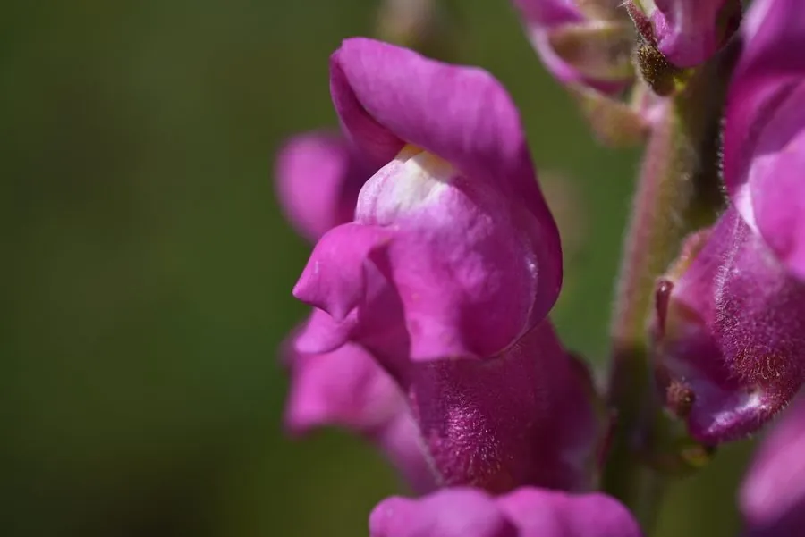

花卉与草本 · 植物界
金鱼草 Antirrhinum majus

车前科多年生草本，花冠形似金鱼嘴或龙头，花色鲜艳，是花境与切花的常见材料，原产地中海沿岸。
- 分类
- 门被子植物门纲木兰纲目唇形目科车前科属金鱼草属
- 栖息环境
- 地中海沿岸的岩石坡地，喜凉爽、阳光充足、排水良好
- 地理分布
- 原产地中海沿岸，现世界各地广泛栽培，中国各地花坛常见
- 保护级别
- 暂无评估
物种志
金鱼草为车前科金鱼草属多年生草本，常作一二年生栽培，株高 20–100 厘米，茎直立，多分枝。叶片披针形至长圆形，对生或上部互生。总状花序顶生，花冠唇形，基部膨大呈囊状，下唇有隆起，形似金鱼嘴，有红、黄、粉、白、橙等色，花期 5–10 月；果实为蒴果。
金鱼草原产地中海沿岸，喜凉爽、阳光充足和排水良好的环境，耐寒性较强，怕酷热和积水。它的花唇在两侧被轻捏时会像小嘴一样张合，英文名意为“龙嘴”，欧洲人还相信把花放在掌心捏一下能带来好运。金鱼草花序挺拔、花色明快，是花境中优良的竖线条材料，也是切花和盆栽的常见品种；栽培以秋播或春播为主，摘心可促进分枝。
形态与习性
- 株高20–100 厘米，茎直立多分枝
- 花期5–10 月，花序自下而上开放
- 果期花后结蒴果
- 光照喜充足阳光，也耐轻度半阴
- 水分喜湿润，忌积水
- 土壤疏松、排水良好的壤土
- 繁殖以播种为主
- 主要用途花境、切花、盆栽
趣味知识
- 金鱼草的花冠形似金鱼嘴，捏住两侧花瓣时上下唇会张合。
- 它的英文名意为“龙嘴”，欧洲传说捏一下花能带来好运。
- 金鱼草花序自下而上依次开放，整串花期可持续数周。
- 花色丰富，从纯白、黄色到深红、紫红都有，是花境的常用材料。